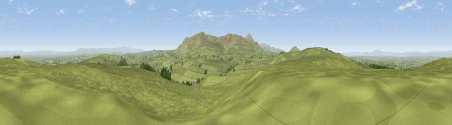

Viewpoint near Caldbeck
#4059 in England · top 26% of its area beats it · near CaldbeckWhere it is
The exact computed spot (NY 29950 40725). Click the marker for map links.
The view, rendered

A 360° render of this exact spot computed from the terrain model, tree cover and land cover — summer colours, afternoon light, calibrated against photographs of famous viewpoints. Real trees, hedges and buildings will differ in detail.
The panorama
Grey silhouette: terrain skyline in each direction (720 bearings, Earth curvature and refraction included). Dashed green: skyline with trees (+15 m) and buildings (+8 m) as obstacles. Blue strip: how far the ground is visible on each bearing.
Where the view opens
Wedge length = distance to the farthest visible ground on that bearing (vegetation-aware). Rings at 10, 25 and 50 km.
What fills the view
93% grassland · 3% woodland · 2% cropland · 1% water
Angular shares of the visible panorama (visual magnitude), not map area. Landscape diversity 0.15 (0–1 Shannon).
Key numbers
More beautiful places nearby
The staircase of upgrades: each row has a higher view potential than everything closer. Driving times are estimates from straight-line distance, calibrated against real road routing — check an actual route before setting out.
| Place | Direction | Drive | Score |
|---|---|---|---|
| Sandale Hill | WSW · 3 km | ~8 min | 73.8 |
| Viewpoint near Ireby | W · 5 km | ~11 min | 74.0 |
| Viewpoint near Ireby | W · 5 km | ~11 min | 76.2 |
| Brae Fell | S · 6 km | ~12 min | 79.0 |
| High Pike | SSE · 6 km | ~13 min | 79.5 |
| Binsey | SW · 9 km | ~18 min | 80.5 |
| Viewpoint near Mungrisdale | SSE · 10 km | ~20 min | 80.8 |
| Viewpoint near Bassenthwaite | SSW · 11 km | ~22 min | 82.8 |
54.75656, -3.09000 · source: screening · position refined by local search. Computed location — check access rights before visiting.